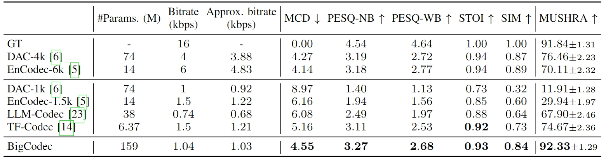

BigCodec:
Pushing the Limits of Low-Bitrate Neural Speech Codec
[Paper] [GitHub]Detai Xin1, Xu Tan2, Shinnosuke Takamichi3, Hiroshi Saruwatari1
1The University of Tokyo, 2Microsoft, 3Keio University
Abstract:
We present BigCodec, a low-bitrate neural speech codec.
While recent neural speech codecs have shown impressive progress, their performance significantly deteriorates at low bitrates (around 1 kbps).
Although a low bitrate inherently restricts performance, other factors, such as model capacity, also hinder further improvements.
To address this problem, we scale up the model size to 159M parameters that is more than 10 times larger than popular codecs with about 10M parameters.
Besides, we integrate sequential models into traditional convolutional architectures to better capture temporal dependency and adopt low-dimensional vector quantization to ensure a high code utilization.
Comprehensive objective and subjective evaluations show that BigCodec, with a bitrate of 1.04 kbps, significantly outperforms several existing low-bitrate codecs.
Furthermore, BigCodec achieves objective performance comparable to popular codecs operating at 4-6 times higher bitrates, and even delivers better subjective perceptual quality than the ground truth.
This page is for research demonstration purposes only.
Overview
Fig. 1: Architecture of the VQ-VAE generator of BigCodec. Please refer to the paper for the definitions of the symbols.
Main results
TABLE 1: Main results of BigCodec on the LibriSpeech test set with 2620 utterances. Bold indicates the best score with p < 1e-3 compared to previous low-bitrate codecs. For MUSHRA both the mean scores and the 95% confidence intervals are reported. The inter-rater agreement of the MUSHRA test is revealed by an ICC(2) of 0.73.

Audio samples
We show 10 audio samples of the reconstructed speech by BigCodec and other baselines.
All samples are randomly selected from the LibriSpeech test set.
Note that, these samples were also used in the MUSHRA test,
so you can also rate them by yourself and compare with the MUSHRA results.
We indiate the bitrate (bps) of each codec.
GT
BigCodec (1.04k)
DAC-4k
TF-Codec (1.5k)
Encodec-6k
LLM-Codec (0.74k)
Encodec-1.5k
DAC-1k
All samples are randomly selected from the LibriSpeech test set.
Note that, these samples were also used in the MUSHRA test, so you can also rate them by yourself and compare with the MUSHRA results.
We indiate the bitrate (bps) of each codec.
| GT | BigCodec (1.04k) | DAC-4k | TF-Codec (1.5k) | Encodec-6k | LLM-Codec (0.74k) | Encodec-1.5k | DAC-1k |
|---|---|---|---|---|---|---|---|
Unseen languages
TABLE 2: Multilingual evaluation results of BigCodec on the MLS test set with 700 utterances from 7 OOD languages. Note that BigCodec is the only codec that is trained on a monolingual corpus (English). Bold indicates the best score with p < 1e-3 compared to previous low-bitrate codecs.
Audio samples
For each unseen language we show 1 sample generated by BigCodec and other baselines.
All samples are randomly selected from the multilingual LibriSpeech (MLS) test set.
We indiate the bitrate (bps) of each codec.
You may find that the objective performance of BigCodec on unseen languages is not as good as on English.
However, note that (1) BigCodec is the only codec in the table that is trained on English only, and
(2) Like the significant higher MUSHRA score of BigCodec in the main results (Table 1),
we also find the perceptual quality of BigCodec is better than other codecs on unseen languages,
even if the objective performance is lower than EnCodec-6k or DAC-4k.
However, note that this observation is not formally verified in the paper, so we encourage you listen to the samples.
Language
GT
BigCodec (1.04k)
DAC-4k
TF-Codec (1.5k)
Encodec-6k
LLM-Codec (0.74k)
Encodec-1.5k
DAC-1k
Polish
Portuguese
Italian
Spanish
French
Dutch
German
All samples are randomly selected from the multilingual LibriSpeech (MLS) test set.
We indiate the bitrate (bps) of each codec.
You may find that the objective performance of BigCodec on unseen languages is not as good as on English. However, note that (1) BigCodec is the only codec in the table that is trained on English only, and (2) Like the significant higher MUSHRA score of BigCodec in the main results (Table 1), we also find the perceptual quality of BigCodec is better than other codecs on unseen languages, even if the objective performance is lower than EnCodec-6k or DAC-4k. However, note that this observation is not formally verified in the paper, so we encourage you listen to the samples.
| Language | GT | BigCodec (1.04k) | DAC-4k | TF-Codec (1.5k) | Encodec-6k | LLM-Codec (0.74k) | Encodec-1.5k | DAC-1k |
|---|---|---|---|---|---|---|---|---|
| Polish | ||||||||
| Portuguese | ||||||||
| Italian | ||||||||
| Spanish | ||||||||
| French | ||||||||
| Dutch | ||||||||
| German |
Ablation studies
TABLE 3: Results of ablation studies on the LibriSpeech test set with 2620 utterances. Bold indicates the best scores with p < 1e-3.
Audio samples
We show 10 audio samples of the reconstructed speech by BigCodec and BigCodec-base
All samples are randomly selected from the LibriSpeech test set.
We indiate the model size (without discriminator) of each model.
GT
BigCodec (159M)
BigCodec-base (17M)
All samples are randomly selected from the LibriSpeech test set.
We indiate the model size (without discriminator) of each model.
| GT | BigCodec (159M) | BigCodec-base (17M) |
|---|---|---|